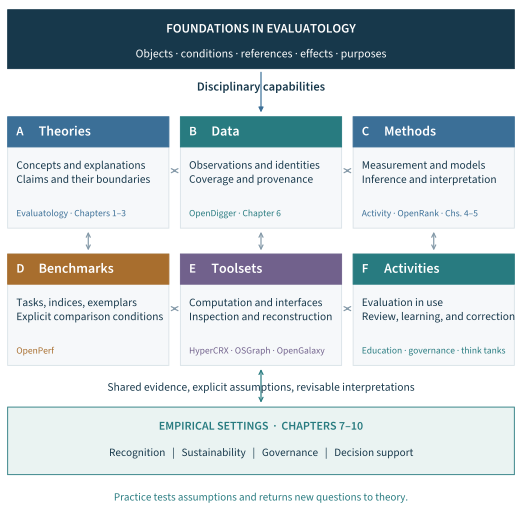
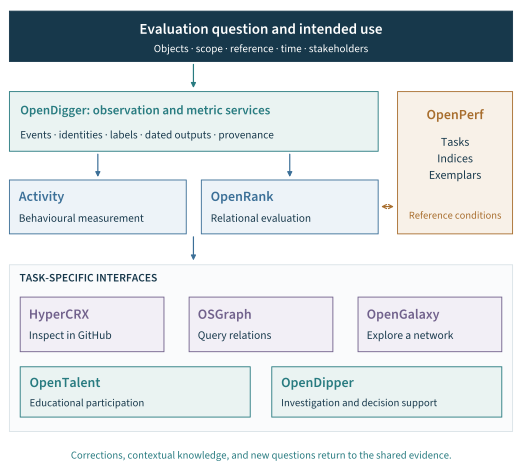
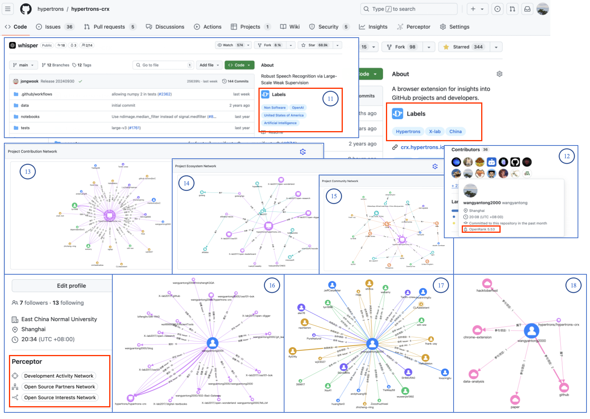
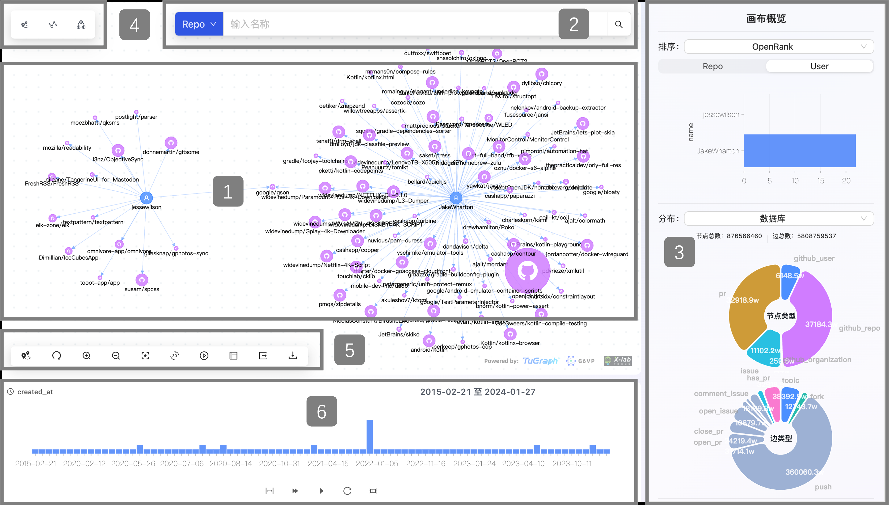
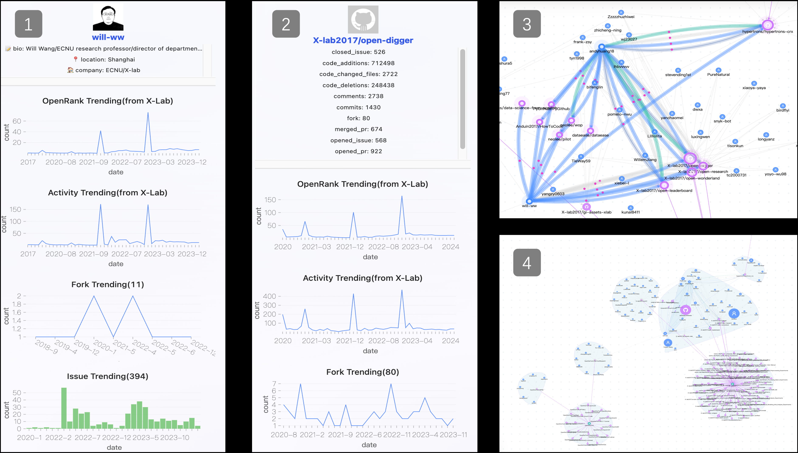
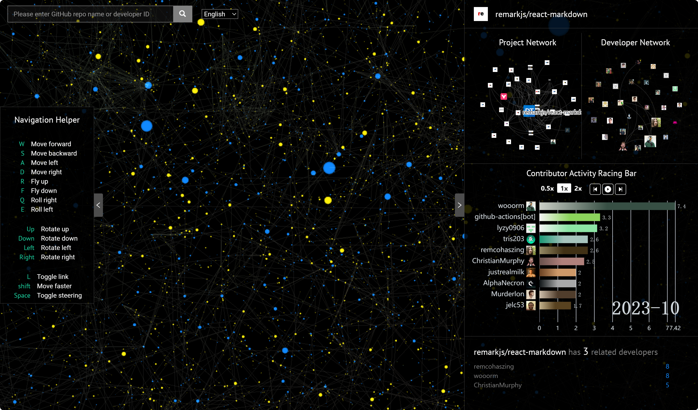
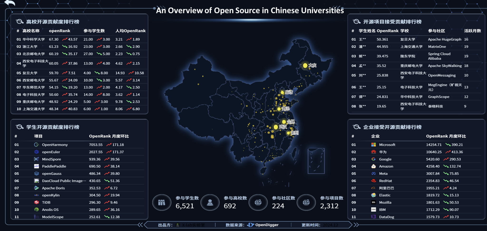
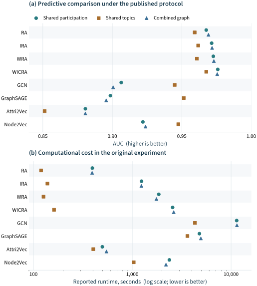

Chapter 10 followed evaluation into reports, observatories, and institutional decisions. Those applications depended on an evidence base that could outlive any one interface or product. A measure developed for research becomes an item in a dashboard; a network score enters a contribution assessment; a regional comparison informs a discussion about public support. The computation may remain unchanged while the question, audience, and consequences change substantially. Building Open Source Evaluatology therefore requires more than a collection of successful measures. It requires a shared account of how questions become observations, how observations support judgments, and how the use of those judgments changes the collaboration being evaluated.
The preceding chapters have developed that account from complementary directions. Evaluatology supplies the conceptual foundations for examining objects, conditions, references, and effects. Open source collaboration supplies a demanding empirical domain: production crosses organizational boundaries, many valuable activities leave incomplete traces, and the participants being evaluated can respond to the evaluation itself. Activity, OpenRank, and OpenDigger make important parts of this domain observable and computable. Contribution recognition, community sustainability, ecosystem governance, and think-tank practice demonstrate why interpretation must remain connected to purpose.
This final chapter organizes these achievements as the foundations of a field. It develops the six-capability framework of theories, data, methods, benchmarks, toolsets, and evaluation activities; examines the interfaces through which an open tool ecosystem makes these capabilities usable; and brings validation and comparison into a common research practice. The discussion draws substantially on our HyperCRX, OpenGalaxy, OSGraph, and OpenPerf studies, together with the supplied OpenTalent observatory. An interdisciplinary synthesis then identifies what measurement theory, network science, software engineering, education, and institutional research contribute to the field, and what open source evaluation can contribute in return.
The distinction between established evidence and a research programme is central throughout. The tools and experiments discussed below are documented achievements. The common exchange format, cross-tool protocols, and coordinated studies proposed here are directions for disciplinary development. Their purpose is to make existing work accumulate into knowledge that can be examined, revised, and transferred.
11.1 A Framework for Disciplinary Development#
The object of the field#
Open Source Evaluatology studies the design, justification, and consequences of evaluation in open source collaboration. Its objects include developers, projects, communities, organizations, and ecosystems, as well as arrangements intended to change their conditions of participation. It examines how their activities and relationships can be represented, which effects matter to whom, and what evidence supports a judgment under stated conditions. This formulation develops our position paper while retaining the distinctions established in Chapters 1–3 (Han et al., 2024; Zhan et al., 2026).
The domain is wider than repository measurement. A repository is an observation site and an administrative unit; it may contain only part of a community’s work. A developer account is a recorded identity, not an exhaustive representation of a person. A collaboration graph describes selected relations, not every channel through which knowledge or responsibility moves. These distinctions create research problems of their own. They determine how an evaluated object is delimited and how evidence from one platform can be interpreted in a larger setting.
The question specification introduced in Chapter 1 remains the common starting point: It identifies the evaluated object or arrangement, affected objects and outcomes, conditions, reference, time horizon, stakeholders, and purpose. The value of the specification is practical. Two studies may use the same OpenRank implementation yet answer different questions because they select different populations, references, or uses. Conversely, two implementations may contribute to the same question if their differences are made explicit and their results can be reconciled.
The evaluatological treatment of effects places a further obligation on the field. Recorded change is not automatically an effect of the object being evaluated. The observational record and the reference conditions must support the proposed attribution. In open collaboration, complete control is often unavailable, and interventions can affect connected participants. The appropriate response is to preserve distinctions among description, prediction, interpretation, and causal explanation, rather than to present every useful empirical result as the same kind of knowledge.
Six capabilities for cumulative inquiry#
Figure 11.1 develops the six-part disciplinary framework supplied with this chapter. The six capabilities are mutually supporting. They are neither a sequence that every study must execute in full nor six names for particular products.

Theories give the field its objects, distinctions, and explanatory commitments. They establish why activity, relational influence, contribution, and sustainable collective capability should not be treated as interchangeable. They also specify what an evaluation would have to demonstrate before a result could support a stronger claim. This capability includes the foundational contribution of Evaluatology and the domain concepts developed through our open source studies.
Data provide observations together with their boundaries. They include event records, entity identities, classifications, temporal coverage, and the documentary material needed to interpret participation. OpenDigger is a substantial implementation of this capability, but the capability also includes curation, corrections, and knowledge of what the available sources omit. Increasing the volume of records does not remove these responsibilities.
Methods connect the question to a defensible representation and analysis. Activity and OpenRank are central contributions, developed in Chapters 4 and 5. Sampling, aggregation, qualitative investigation, and comparisons across conditions also belong here. A discipline needs methods for deciding when a measure applies, not only methods for computing it.
Benchmarks create explicit reference conditions for comparison. OpenPerf distinguishes task benchmarks, index benchmarks, and exemplar benchmarks. These support different judgments: comparing methods, comparing entities on a defined dimension, and learning from a selected practice. The reference must remain connected to the question for which it was chosen.
Toolsets realize methods and expose evidence to users. A browser extension, a graph explorer, a talent observatory, and a think-tank platform serve different tasks. Their disciplinary contribution depends on whether a user can move from a displayed result to the observations and assumptions that produced it. Interface design is therefore part of evaluation practice.
Evaluation activities bring the other capabilities into research, education, community work, organizational governance, and public discussion. They include the design of a study, the review of evidence, the interpretation of a result, and the observation of consequences. Activities supply questions and counterexamples that can revise theories, data definitions, and methods.
This architecture differs in level from the five-component evaluation system in Chapter 3. Problem definition, task instance, algorithm mechanism, implementation instance, and supporting system describe how a particular evaluation is organized. The six capabilities describe what a research field must collectively develop and maintain. A single evaluation draws on several capabilities; a single tool may participate in several components. Keeping these levels distinct avoids turning an engineering diagram into a competing theory of the discipline.
The book’s contribution to the framework#
Table 11.1 identifies the principal connections between the framework and the preceding chapters. The cumulative contribution is the connection among these results. Activity provides a representation of participation; OpenRank introduces relational structure; OpenDigger makes recurrent computation and access practicable. The applications show where these representations become useful and where they require additional evidence.
| Evidence base | Established contribution | Implication for the framework |
|---|---|---|
| Chapters 1–3: foundations | Objects, value, reference conditions, and an evaluation-system design. | A measure becomes evaluative evidence through a question and an intended use. |
| Chapter 4: Activity | A specified representation of recorded collaborative participation. | Event selection and aggregation define the observed dimension; they do not exhaust contribution. |
| Chapter 5: OpenRank | Relational evaluation with explicit graph and algorithmic choices. | Influence depends on the represented relations and comparison scope. |
| Chapter 6: OpenDigger | Recurrent computation, data services, and a contribution-recognition deployment. | Infrastructure and participant responses belong in the account of evaluation. |
| Chapter 7: recognition | Educational applications combining relational and contextual evidence. | Contribution, achievement, and learning require distinct warrants. |
| Chapter 8: sustainability | Evidence about archival, maintenance, exit, transfer, and renewal. | The continuity of collective capability can exceed the life of a repository. |
| Chapter 9: governance | Analysis of transitions, organizational contributions, and attribution. | Object boundaries and institutional conditions may change during evaluation. |
| Chapter 10: think tanks | Reports, observatories, visual investigation, and knowledge products. | Evidence must retain its meaning as it enters institutional use. |
The applications also modify the theoretical account. Educational recognition shows why collaboration and achievement require distinct evidence. Archived projects show why the continuity of useful capability cannot be reduced to the survival of one repository. Governance transitions show why the unit of analysis may move across organizations and successor projects. Think-tank practice shows how the meaning of a result changes as it travels from an analysis into an institutional decision. These are substantive reasons to refine the domain framework, rather than decorative examples appended to a general theory.
A discipline develops when such refinements become inspectable and reusable. A later study should be able to say which concept it retains, which observation it improves, and which earlier interpretation it revises. The six capabilities supply an organizational vocabulary for that process. Their value will ultimately depend on whether they help researchers produce more informative and better-supported evaluations.
11.2 An Open Evaluation Tool Ecosystem#
Shared evidence, different analytical tasks#
The OpenDigger ecosystem offers several ways to work with related observations. HyperCRX brings evidence into GitHub pages. OSGraph supports focused graph queries and analysis. OpenGalaxy provides an overview and navigable representation of collaboration networks. OpenTalent organizes educational participation, while OpenDipper connects observation to the investigations discussed in Chapter 10. These interfaces differ because the user’s task differs.
Figure 11.2 organizes this ecosystem by function. OpenDigger supplies the data and metric services examined in Chapter 6 (Wang et al., 2026). Activity and OpenRank provide important measurement procedures. OpenPerf supplies a vocabulary and experimental resources for comparison. The applications turn selected outputs into interfaces for inspection, interpretation, and action. The figure represents a functional architecture: it does not claim that every historical tool version implements the same API or shares one continuously synchronized database.

This distinction matters when tools appear to disagree. A repository-centred graph may use a different projection from a developer–repository graph. A panel may show one month’s values while an explorer displays a precomputed annual network. An organizational attribution may depend on labels maintained after the original calculation. A comparable result requires agreement on these choices, or an explicit account of their differences. Visual consistency alone cannot establish semantic consistency.
The ecosystem is also part of a wider research infrastructure. GrimoireLab demonstrates a complementary modular approach to software-development analytics, including retrieval, enrichment, identity management, and visualization (Due nas et al., 2021). Its treatment of identity resolution is especially relevant: combining records is itself an analytical decision, and uncertain matches require curation. The constructive connection is to exchange documented observations and procedures where their semantics align. A comparison of platforms should specify the task and evidence requirements before claiming that one infrastructure is generally superior.
Openness, provenance, and interoperability#
An evaluation tool is open in a scientifically useful sense when others can examine the path from question to result, reproduce the relevant transformations, and challenge an interpretation. Source-code availability is an important part of this relationship, but it does not identify the data snapshot, recover a missing classification rule, or explain why a particular comparison was chosen.
The FAIR principles offer a useful starting point for discoverable and reusable research objects, including persistent identification, descriptive metadata, shared representations, and provenance (Wilkinson et al., 2016). Applying these ideas to open source evaluation suggests a small exchange record accompanying each published result. Table 11.2 proposes its contents. This is a design recommendation derived from the book’s cases, not an existing standard attributed to the supplied tools.
| Field group | Information to retain |
|---|---|
| Question and use | Object, affected outcomes, conditions, reference, time horizon, stakeholders, and purpose. |
| Observed population | Platform, entity identifiers, inclusion rules, identities and attribution rules, bot policy, coverage limits. |
| Temporal scope | Observation interval, retrieval date, release date, and applicable time zone. |
| Measurement | Metric name and version, events, weights, aggregation, graph construction, and normalization. |
| Computation | Implementation release, configuration, input references, output identifiers, and relevant execution conditions. |
| Evidence and interpretation | Comparison protocol, supporting observations, uncertainty or sensitivity analysis, and limits of the claim. |
| Revision and reuse | Provenance, correction history, permitted reuse, and links between superseded and current releases. |
The proposed record extends the observation tuple in Equation 10.1. That tuple preserves an entity, measure, value, unit, window, status, and provenance; the exchange record also preserves the evaluation question, reference conditions, transformations, and interpretation. The two operate at different levels of the same inquiry. The record should travel with a result across interfaces. If an analyst selects a repository in an explorer and opens its contribution panel, the relevant scope and time window should remain available. If a teacher exports a student portfolio, the export should distinguish observed actions, calculated measures, and judgments added by assessors. If a report aggregates institutions, its attribution rules should be inspectable without reconstructing them from a chart legend.
Interoperability consequently has two levels. Syntactic interoperability makes files and services readable by another program. Semantic interoperability makes it possible to determine whether they describe the same objects, relations, and measures. A common identifier helps the first level but is insufficient for the second. Repository renaming, account merging, organizational movement, and changes in metric definitions can all alter the interpretation of an apparently stable identifier.
Reproduction, maintenance, and correction#
The practical unit of exchange should be an evaluation that can be reconstructed, rather than an isolated score. Code, configuration, data references, and the argument attached to a result belong together. Computational reproducibility makes an analysis inspectable, although it does not establish that the question or interpretation is sound (Peng, 2011). This distinction preserves the connection to Chapter 3: implementation validation is one responsibility within the evaluation system.
Maintenance also requires a policy for change. A corrected organizational label may alter a regional comparison without changing the underlying events. A revised bot classifier may alter participation totals. A new graph construction may alter influence rankings even when the solver is unchanged. Publishing the reason and scope of a revision allows readers to distinguish changes in the ecosystem from changes in its representation.
An open tool ecosystem should therefore preserve stable releases for research while permitting improvements in operational services. The research release fixes the assumptions needed for comparison. The service may incorporate corrections more quickly, provided that it exposes the version in use. Neither role should silently substitute for the other. This arrangement permits cumulative inquiry without requiring the infrastructure to stop evolving.
11.3 Tools for Evidence and Interpretation#
HyperCRX: inspection within the workflow#
The original HyperCRX study addressed a practical separation between working on GitHub and consulting analytical services elsewhere (Tang et al., 2024). Its browser extension places project and developer information in the pages where users encounter those entities. OpenDigger’s precomputed results are retrieved using repository or developer identifiers, and a feature manager determines which elements apply to the current page. This design makes the observation context part of the interface.
HyperCRX 2.0 extends the approach with contextual labels and six relational views: project contribution, project ecosystem, project community, developer activity, open source partners, and open source interests (Wang et al., 2025). Figure 11.3 reproduces the corresponding illustration. The views offer different entry points into collaboration. A maintainer can inspect the participants surrounding a project; a developer can inspect the projects and collaborators surrounding their own work. The interface makes it possible to move from an aggregate impression to a more specific question about participation.

The extension also incorporates language-model assistance for documentation and project analysis. In this chapter, that feature is relevant as an interface facility: a generated explanation should remain connected to the records and calculations it describes. It supplies no additional evidence that a collaboration score is valid, and the tool paper does not establish a controlled improvement in judgment quality. The disciplinary contribution of the extension is the integration of analytical access with an existing workflow; stronger claims about user outcomes require a separate study.
A useful evaluation task would ask maintainers to identify the cause of an apparent change in contribution. Completion time alone would be insufficient. The study would also need to examine whether the participant selected the correct time window, recognized a change in coverage, and distinguished an account’s observed activity from the quality of its work. Such a task evaluates the reasoning supported by the interface, rather than the number of features it exposes.
OSGraph and OpenGalaxy: two forms of relational inquiry#
OSGraph provides a graph-oriented environment for querying and inspecting open source communities (Huang et al., 2024). The supplied paper describes a data pipeline involving OpenDigger, analytical storage, graph storage, and visual analysis. Its interface combines a graph canvas, search, an overview panel, analysis controls, view controls, and a timeline. Node expansion, common connections, paths, and community detection make relationships available for focused investigation.


Figure 11.4 connects the history of an entity with its surrounding network. The combination is useful when an aggregate conceals a change in composition. An analyst may inspect whether a project’s activity depends on a small set of collaborators, then examine those collaborators’ other recorded relationships. The inference remains conditional on the graph. A path indicates a connection through the included relation types; it does not by itself demonstrate dependency, command, or knowledge transfer.
OpenGalaxy addresses a different scale of exploration (Zhang et al., 2024). The 2024 research platform constructs a collaboration network from developer–repository participation, computes a repository projection, and presents a navigable three-dimensional view. Its paper distinguishes blue repository nodes from yellow developer nodes and uses different quantities for their sizes. The interface supports searching, navigation, neighbouring entities, and historical activity information. Figure 11.5 preserves this original representation.

In the historical repository projection, a developer’s participation in two repositories contributes to their connection through where the activity quantities follow that paper’s specification. The formula is retained here to expose the meaning of a displayed edge. It expresses a relation through shared participation. It is not a software-dependency relation, and it should not be silently relabelled as one. The repository projection and weighted PageRank described in the 2024 implementation also remain distinct from the later heterogeneous OpenRank formulation developed in Chapter 5.
These two explorers complement each other at the level of inquiry. An overview can suggest a region of the collaboration network to investigate. A query-oriented workspace can then make selected relations explicit. Neither a visually separated cluster nor a prominent node constitutes an explanation on its own. Layout thresholds, force calculations, and the included population affect what is visible. The scientific record must preserve those choices as well as the image.
Visualization research provides a concise discipline for assessing such interfaces. Munzner (2009) distinguishes domain problems, data and task abstractions, visual encodings and interactions, and implementation algorithms. Success at one level does not repair an error at another. For our ecosystem, this implies separate questions about whether an explorer addresses a real analytical task, represents the appropriate relations, supports accurate interpretation, and computes responsively. The supplied tool papers establish implemented designs and demonstrations; they do not settle all four questions.
OpenTalent: participation across educational boundaries#
OpenTalent makes the connection between educational participation and open source communities visible at an institutional scale. The supplied observatory screenshot records 6,521 participating students, 692 universities, 224 communities, and 2,312 projects, with an update date of December 2024 (X-lab, 2024). Figure 11.6 reproduces this snapshot without changing its values. These are the dashboard’s displayed coverage counts, not a census of all university participation and not measures of learning effectiveness.

The observatory extends the course-level cases of Chapter 7. A course assessment concerns particular learning objectives and participants under known teaching conditions. An institutional observatory concerns participation across many settings, with much weaker control over entry conditions, opportunities, and attribution. Its value is to locate relationships that warrant investigation: which communities receive student contributions, how participation persists beyond a course, and where students encounter opportunities for collaborative work.
An appropriate investigation would link the observable participation record to a portfolio of work and its educational context. The record can identify a contribution and its discussion; an assessor can examine the technical and collaborative work involved; the student can explain decisions and reflect on feedback. These sources answer different questions. A university total cannot substitute for an individual learning assessment, and a student’s network position cannot by itself establish a transferable competence.
The OpenTalent example clarifies why an ecosystem needs several interfaces. A national overview locates patterns, a project view explains the setting of a contribution, and a portfolio supports assessment of the work. The handover should preserve identity, date, and provenance. This is also the requirement encountered in OpenDipper, but the immediate task is different: educational interpretation here, and institutional investigation in Chapter 10. The common requirement can be studied across tools without treating their purposes or outcomes as interchangeable.
11.4 Validation and Shared Benchmarks#
OpenPerf and common reference conditions#
OpenPerf addresses a recurring difficulty in open source research: abundant observations do not by themselves create a common basis for comparison (Han et al., 2025). Its three benchmark categories connect methodological testing to practical evaluation. Task benchmarks compare methods on specified problems. Index benchmarks supply defined representations of an entity or arrangement. Exemplar benchmarks identify a selected practice or performance level as a reference. A strong result in one category does not automatically validate the next.
The published framework specifies six elements of a task benchmark: its name, open source scenario, task type, dataset, models, and evaluation criteria. Table 11.3 condenses the nine task definitions in the paper. Their diversity matters. Completion, classification, ranking, anomaly detection, and recommendation require different targets and reference evidence. Their results cannot be combined into one undifferentiated measure of ecosystem quality.
| Task | Target or reference | Evaluation in the source |
|---|---|---|
| Behaviour completion and prediction | Behaviour series from five projects; observations removed to form a completion problem. | NMSE, NRMSE, NMAE; comparative experiment. |
| Bot identification and classification | Account features with labels assembled using existing detectors and manual work. | Classification measures; comparative experiment. |
| Comment sentiment classification | Positive and negative issue comments; manually assigned labels. | F1 and precision specified. |
| Software supply-chain risk prediction | Project attributes used to construct a maintainability assessment. | No task evaluation measure specified in source Table 2. |
| Project influence ranking | A repository collaboration graph and influence-ranking procedure. | Algorithm runtime specified. |
| Archived-project prediction | Repository features and archive status from GitHub. | F1 and precision specified. |
| Network influence-index prediction | Project metrics used to predict an influence value. | MSE and RMSE specified. |
| Community anomaly detection | Behaviour series; labels informed by clustering and expert judgment. | F1 and precision specified. |
| Project recommendation by link prediction | Graphs based on shared participation, shared topics, and their combination. | AUC and runtime; comparative experiment. |
The descriptions retain the roles of the source tasks. Recovery of removed observations or links does not, without a temporal protocol, establish performance on future events. A model-generated index is also distinct from an independently observed outcome.
The framework is also an example of practice informing research design. Enterprise governance, software development, community operations, and ecosystem strategy generate different demands on the same underlying data. A missing-data problem encountered in a dashboard becomes a completion task; uncertainty about automated participation becomes a classification task; finding potentially relevant projects becomes a link-prediction task. The problem is abstracted sufficiently for method comparison while retaining the application that gives the comparison meaning.
Three experiments and their evidential scope#
The OpenPerf paper reports experiments for three representative tasks. Table 11.4 reproduces selected results from its completion and bot-classification experiments; Figure 11.7 redraws the full reported link-prediction comparison. These are historical results from the published study. They are not new executions of the algorithms or a comparison with subsequent releases.
| (a) Behaviour completion: NMSE, lower is better | |||
|---|---|---|---|
| Project | TAMF | Best alternative | Alternative method |
| PyTorch | 0.041 | 0.161 | iForest |
| SkyWalking | 0.235 | 0.143 | iForest |
| TensorFlow | 0.024 | 0.031 | TRMF |
| TiDB | 0.043 | 0.124 | TRMF |
| VS Code | 0.234 | 0.326 | TRMF |
| (b) Bot classification: higher is better | |||
|---|---|---|---|
| Method | Accuracy | F1 | AUC |
| Logistic regression | 0.9234 | 0.4856 | 0.5760 |
| Decision tree | 0.7995 | 0.3408 | 0.5024 |
| SVM | 0.8936 | 0.4609 | 0.5414 |
| Gaussian naive Bayes | 0.9548 | 0.5923 | 0.5319 |
| -nearest neighbours | 0.8309 | 0.3706 | 0.5119 |
| Random forest | 0.8817 | 0.4880 | 0.6486 |
| BotHunter | 0.8649 | 0.3405 | 0.5512 |
| BoDeGHa | 0.8286 | 0.3628 | 0.5049 |
| BotHawk | 0.8799 | 0.8821 | 0.9472 |
Panel (a) selects NMSE from the three reported error measures and retains TAMF plus the best of the seven alternatives for each project. Panel (b) retains all nine methods and three of the five reported measures. Original values are preserved; confusion matrices, uncertainty intervals, and new replications are not supplied here.
The completion experiment uses behaviour series from five active projects during 2020 and introduces missing observations. In the reported NMSE comparison, TAMF gives the lowest value for PyTorch, TensorFlow, TiDB, and VS Code, while iForest gives the lowest value for SkyWalking. The exception is informative: a method designed to exploit temporal structure does not lead on every series. The paper connects this difference to weaker periodicity in SkyWalking. For deployment, an additional question is whether the experimental missingness resembles the actual collection failure. Randomly removed observations and a prolonged service outage can require different tests.
The bot-classification experiment compares nine methods on a constructed account dataset. BotHawk has the highest reported F1 and AUC, whereas Gaussian naive Bayes has the highest reported accuracy. The values in Table 11.4 retain that distinction. The result supports a comparison under the study’s labels and protocol; it does not establish that one model will remain best across changing bot populations. A new application should specify which classification errors matter, disclose the account selection and labelling process, and evaluate transfer to the intended population.
The link-prediction experiment constructs three repository graphs: shared developer participation, shared topic labels, and their combination. The dataset definitions therefore vary the meaning of a relation as well as the representation. The reported comparison shows strong performance for methods based on local graph information. WICRA has the highest AUC in each of the three graphs, while RA runs faster. On the shared-participation graph, their reported pairs are 0.9759 and 2,561.7305 seconds for WICRA, and 0.9676 and 394.6628 seconds for RA. These observations expose an accuracy–runtime trade-off within the original experiment.

Random removal of observed links tests recovery under the chosen removal mechanism. It is not equivalent to predicting future participation from information available at an earlier date. Nor does a high AUC establish that a recommendation helps a newcomer find a suitable project. That latter claim requires observation of use, including relevance, access to assistance, and the experience of attempting a contribution. The benchmark makes an algorithmic claim examinable; further evidence connects it to a practical one.
Validation across levels#
The chapter’s synthesis separates five responsibilities. Measurement validation examines whether the observations and representation support the intended interpretation. Computational validation checks whether the implementation realizes the specified procedure. Task validation compares performance against an independently specified target and protocol. Use validation examines whether people can interpret and apply the result appropriately. Consequential evaluation examines what changes when the evaluation is deployed. These responsibilities interact, but evidence for one does not discharge the others.
The cases locate these responsibilities precisely. Activity requires an account of the work represented by its selected events; OpenRank requires both a specified computation and a justified interpretation of the graph. OpenPerf tests performance on a defined task, while OpenTalent’s educational use requires evidence about learning. For a think-tank product, Table 10.3 separates implementation and dissemination from institutional uptake and consequences. Its application-specific distinctions become part of this wider validation practice. The five responsibilities synthesize these requirements; they do not replace the evaluation-system components in Chapter 3.
Common benchmarks should therefore preserve the target, population, time separation, labels, and selection procedure alongside the score. A temporal task should distinguish data available at the forecast date from later information. A transfer task should identify the communities withheld from development. A computational comparison should state the graph, configuration, hardware, and stopping rule. These obligations implement the evaluation design developed in Chapter 3 at the scale of shared research practice.
The benchmark itself must be open to revision. A task can become easier because its labels are predictable from an unintended feature; a popular dataset can become unrepresentative of new communities; a frequently inspected test set can cease to provide an independent comparison. Retaining a stable historical release supports replication, while publishing a documented successor supports progress. A field needs both continuity of reference and the ability to question what the reference represents.
11.5 Interdisciplinary Foundations#
The interdisciplinary basis of Open Source Evaluatology is methodological as well as substantive. It draws on neighbouring fields to answer different parts of an evaluation question. The purpose is to connect these contributions around open collaboration, while preserving the assumptions that make each one useful. Table 11.5 summarizes the resulting research connections.
| Connection | Contribution to open source evaluation | Reciprocal research opportunity |
|---|---|---|
| Measurement theory | Distinguish an index, an attribute, its interpretation, and the consequences of use. | Study interpretation and measurement change when a public score becomes an incentive. |
| Network science | Match relations and centrality to the process being represented; distinguish position from causal influence. | Compare graph constructions against documented episodes of open collaboration. |
| Software engineering and visual analytics | Connect events with work practices; validate domain tasks, representations, interfaces, and algorithms separately. | Assess whether tools help users reconstruct and correctly interpret evaluation evidence. |
| Education and learning analytics | Relate participation to learning objectives, work samples, feedback, and opportunities to learn. | Follow transitions from course participation to sustained community contribution. |
| Institutional research and science policy | Explain resource conditions, collective action, and the behavioural effects of public evaluation. | Examine how recognition and decision-support arrangements alter collaboration and maintenance. |
The connections draw on the primary literature discussed in Section 11.5. They preserve differences among theoretical positions and avoid treating a borrowed concept as independent evidence for a claim about open source.
Measurement theory and valid interpretation#
Measurement theory makes the distinction between a reproducible number and an adequately supported interpretation explicit. Messick (1995) places interpretations and their implications for use within a unified account of validity. Borsboom et al. (2004), by contrast, argues for a causal conception: the attribute being measured must exist and produce variation in the measurement outcomes. These positions should not be presented as a single settled doctrine. Their disagreement exposes two questions relevant to our field: what generates a score, and what warrants the meaning and use assigned to it?
For open source evaluation, the distinction is particularly important because some quantities are deliberately constructed indices. Activity combines selected behaviours according to a rule. It need not be understood as a reflective test of a hidden psychological trait. A claim that it represents a useful dimension of participation requires a defence of its selected events, weights, aggregation, and setting. A claim that it measures competence requires additional evidence about competence. The latter does not follow from the former, even if both quantities correlate in a particular sample.
Software measurement supplies a closely related tradition. Kitchenham et al. (1995) connects entities, attributes, instruments, units, and validation within a measurement framework. The practical implication for our work is to document the complete measurement operation. A change in repository scope or identity resolution can change a result even when its algebra remains unchanged. The versioned specifications developed in Chapters 4–6 are a response to this problem.
Open source collaboration contributes a useful setting for extending these debates. Its measurements are often public, recurrent, and used by the people whose behaviour generates them. A research programme can examine how the validity of an interpretation changes after a measure becomes part of a recognition or governance process. The resulting evidence can refine both the construct and the conditions under which it is useful.
Network science, software engineering, and relation semantics#
Network science supplies methods for studying interdependence, but a graph does not acquire an interpretation from topology alone. Borgatti (2005) shows that centrality measures imply different assumptions about the processes moving through a network. This matters for OpenRank and the graph tools: a relation through shared participation, a direct interaction, and a package dependency need not support the same interpretation of influence.
The distinction also separates relational prominence from a causal effect on others. Research on diffusion shows why correlated behaviour among connected actors can reflect selection into similar relationships as well as influence (Aral et al., 2009). Open source examples add shared employers, common technical dependencies, and coordinated release schedules as plausible alternative explanations. A collaboration score can describe a position without resolving these explanations. Testing a diffusion claim requires a design appropriate to that claim.
Software engineering grounds the relations in work practices. Issue discussion, review, integration, maintenance, and release management have different roles in producing and sustaining software. Their traces should be interpreted with knowledge of those roles. Trace ethnography offers one way to combine documentary records with situated understanding of coordination (Geiger and Ribes, 2011). Applied to our setting, it can explain why an apparent burst of activity reflects a migration, why work is credited to a service account, or why a quiet maintainer remains essential.
The reciprocal contribution is a domain in which relational models can be examined against documented collaboration. Chapters 5 and 9 show how the definition of a relation and the boundaries of the object affect interpretation. Future studies can compare alternative graph constructions on the same underlying work episodes, asking which relationships preserve the mechanisms relevant to the evaluation question. Such comparisons would contribute more than another ranking correlation: they would explain when a particular network model is informative.
Education, feedback, and learning#
Education provides an especially clear test of the field’s ability to connect evidence with purpose. Situated learning treats participation in a community of practice as central to learning (Lave and Wenger, 1991). This perspective helps explain the interest in open source courses and OpenTalent, where students encounter existing practices and collaborators. It does not imply that a participation count is a direct measure of what a student has learned.
Learning analytics reinforces the need for theory in selecting and interpreting digital traces (Wise and Shaffer, 2015). In an open source course, the same recorded action may have different meanings for a novice, an experienced contributor, and an instructor. A review comment may demonstrate a newly acquired skill, routine assistance, or a required exercise. Educational design and the learner’s starting point help distinguish these interpretations.
Formative assessment adds the question of how evidence helps students act. Nicol and Macfarlane-Dick (2006) emphasizes learners’ active role in interpreting feedback and regulating their work. For OpenTalent, this suggests an interface that permits a student to inspect a contribution, connect it with a learning objective, and decide what to improve. A rank may draw attention; the educational value depends on the feedback process that follows.
The contribution of Open Source Evaluatology is to connect these processes to collaboration beyond the classroom. A prospective study could follow participation before, during, and after a course, combine work samples with independent assessment, and examine transitions into sustained community roles. The outcome would be a better-supported account of learning and participation, rather than a claim that one score measures both. It would also extend Chapter 7’s evidence without treating the OpenTalent screenshot as a new educational experiment.
Institutions, science policy, and evaluative consequences#
Institutional research explains why the conditions of collaboration belong inside the evaluation question. Ostrom (2009) provides a framework for organizing heterogeneous evidence about resource systems, users, governance, interactions, and outcomes. Its relevance here is the insistence on relationships and context. Software can be copied without exhausting the original artifact, whereas maintainer attention, review capacity, and organizational support remain limited. The analogy with natural-resource systems must therefore be adapted to the resources and practices at issue.
The theory of commons-based peer production gives open collaboration a more direct institutional interpretation. Benkler (2002) examines how distributed contributors coordinate information production through arrangements that differ from conventional markets and hierarchies. For evaluation, this directs attention to access, matching, integration, and the conditions under which contributions can be combined. It supports Chapter 2’s concern with collective capability while leaving the value of a particular arrangement open to empirical examination.
Public evaluation then becomes part of the setting it describes. Espeland and Sauder (2007) shows how rankings can change behaviour through commensuration and altered expectations. The application to open source is a research hypothesis, not an automatic prediction: recognition may make neglected work visible, but it may also redirect effort toward the recorded dimensions. Chapters 6 and 7 provide grounds for examining both possibilities. A suitable study observes the composition and quality of work as well as the reported score.
Science-policy research contributes principles for the responsible use of metrics. The Leiden Manifesto places quantitative information in relation to expert judgment and the purposes of assessment (Hicks et al., 2015). In the think-tank setting of Chapter 10, this means that a regional or institutional comparison needs an explicit mission and interpretive process. The disciplinary contribution is to carry the same obligations through the underlying open source data, methods, and interfaces, so that scrutiny remains possible after the result enters a report.
These connections depend on common objects that different communities can use without agreeing on every purpose. Star and Griesemer (1989) describes boundary objects as sufficiently stable to support cooperation while remaining adaptable to different viewpoints. A versioned contribution record can serve such a role: a student, maintainer, teacher, and researcher can examine the same work while asking different questions. This is our proposed application of the concept. It explains why shared evidence need not require a single universal ranking or a single account of value.
11.6 Building a Cumulative Research Programme#
Common practice without premature uniformity#
Cumulative inquiry depends on publishing the evaluation question together with the process that produces its evidence. Objects, scope, definitions, data releases, transformations, reference conditions, and intended use allow another researcher to examine the argument. A benchmark, a qualitative investigation, and an institutional evaluation need different records, but each should make its claims open to scrutiny.
Standards can stabilize terminology and exchange formats while recording the conditions under which a rule applies. The OpenPerf paper reports the use of Activity and influence indices in community-governance assessment. This establishes a route into practice. Continued investigation must examine transfer, consequences, and changes in the ecosystem. The standard remains a maintained reference for a defined purpose.
Peer review should recognize contributions across the six capabilities. A metric needs a supported interpretation; a dataset needs documented boundaries and corrections; a tool needs an examinable analytical task. Replications and negative results identify where earlier conclusions require revision. Recognizing these forms of work gives researchers reasons to maintain the infrastructure on which subsequent studies depend.
Teaching, benchmark exercises, and community evaluations can support the same practice. A case can be examined through its measurement rule, graph, interface, and consequences. Differences in scope or judgment become subjects for inquiry. Educational applications and think-tank investigations provide continuing contact with practical questions and settings in which revised methods can be assessed.
Four connected research questions#
The first question concerns comparability: when does a measure retain its interpretation across communities, platforms, and development stages? A coordinated study could fix the question and specification, select contrasting settings, and examine both transfer and failure. Its contribution would be an account of applicability, supported by evidence from those settings.
The second concerns visibility: which contributions are systematically missed, and how does their omission affect evaluation? Comparing platform traces with portfolios, interviews, and observations of mentoring, review, and maintenance would expose gaps in the record. The findings could improve a representation or establish where another form of evidence is needed.
The third concerns reactivity: how does using an evaluation change collaboration? Prospective deployments should retain the mechanism’s version, its communication to participants, and the timing of use. Changes in effort, participation, work quality, and unrecorded activities should be examined alongside scores. A causal claim requires a credible reference and an account of spillovers. This extends the deployment questions of Chapter 6.
The fourth concerns revision: how can evaluation remain interpretable as its data and methods evolve? Computing old and new specifications on an overlapping period can separate changes in representation from observed changes in collaboration. A documented transition should explain the differences and identify which historical comparisons remain meaningful.
These questions interact. A tool may reveal previously invisible work; the resulting ranking may redirect participation; that response may change the basis of comparison. The ecosystem provides settings in which such interactions can be investigated across measurement, implementation, and use. Coordinated studies can turn experience with individual applications into findings about the conditions of evaluation.
The field’s enduring contribution#
This book establishes a connected foundation for Open Source Evaluatology. Evaluatology supplies the conceptual discipline; Activity and OpenRank specify ways of representing collaboration; OpenDigger makes observation and computation reusable. The empirical studies and institutional applications show how these resources support judgments about recognition, continuity, governance, and public support. They also identify where the concepts and methods require refinement.
The closing framework gives these contributions a place in a shared research practice. Its six capabilities connect theory with evidence, tools with interpretation, and applications with further inquiry. The field can develop through better observations, supported comparisons, useful interfaces, and findings that revise an earlier claim. Maintaining those connections is the continuing work of Open Source Evaluatology.
References#
Aral, S., Muchnik, L., and Sundararajan, A. (2009). Distinguishing influence-based contagion from homophily-driven diffusion in dynamic networks. Proceedings of the National Academy of Sciences, 106(51), 21544–21549. DOI: 10.1073/pnas.0908800106.
Benkler, Y. (2002). Coase’s penguin, or, Linux and the nature of the firm. Yale Law Journal, 112, 369–446. https://yalelawjournal.org/article/coases-penguin-or-linux-and-the-nature-of-the-firm.
Borgatti, S. P. (2005). Centrality and network flow. Social Networks, 27(1), 55–71. DOI: 10.1016/j.socnet.2004.11.008.
Borsboom, D., Mellenbergh, G. J., and van Heerden, J. (2004). The concept of validity. Psychological Review, 111(4), 1061–1071. DOI: 10.1037/0033-295X.111.4.1061.
Dueñas, S., Cosentino, V., Gonzalez-Barahona, J. M., et al. (2021). GrimoireLab: A toolset for software development analytics. PeerJ Computer Science, 7, e601. DOI: 10.7717/peerj-cs.601.
Espeland, W. N., and Sauder, M. (2007). Rankings and reactivity: How public measures recreate social worlds. American Journal of Sociology, 113(1), 1–40. DOI: 10.1086/517897.
Geiger, R. S., and Ribes, D. (2011). Trace ethnography: Following coordination through documentary practices. In Proceedings of the 44th Hawaii International Conference on System Sciences, pp. 1–10. https://stuartgeiger.com/trace-ethnography-hicss-geiger-ribes.pdf.
Han, F., Zhao, S., Wang, W., Zhou, A., Qian, W., Zhou, X., Peng, J., You, L., Chen, Y., Xia, X., Tang, Y., Yang, L., and Tian, C. (2024). Open Source Evaluatology: An evaluation framework and methodology for open source ecosystems based on evaluatology. BenchCouncil Transactions on Benchmarks, Standards and Evaluations, 4(4), 100190. DOI: 10.1016/j.tbench.2025.100190. Assigned to the December 2024 issue; published online in 2025.
Han, F., Bi, F., Zhang, Y., Li, H., You, L., Wang, W., Qian, W., and Zhou, A. (2025). OpenPerf: A data science benchmark system for open source ecosystem sustainable development. Chinese Journal of Computers, 48(3), 632–649. In Chinese. DOI: 10.11897/SP.J.1016.2025.00632.
Hicks, D., Wouters, P., Waltman, L., de Rijcke, S., and Rafols, I. (2015). Bibliometrics: The Leiden Manifesto for research metrics. Nature, 520, 429–431. DOI: 10.1038/520429a.
Huang, W., Xia, X., Zhou, A., Zhou, X., Wang, W., Zhao, S., Wang, Z., and Bian, S. (2024). OSGraph: A data visualization insight platform for open source community. In Database Systems for Advanced Applications (DASFAA 2024), LNCS 14856, pp. 476–479. Springer. https://doi.org/10.1007/978-981-97-5575-2_42.
Kitchenham, B., Pfleeger, S. L., and Fenton, N. (1995). Towards a framework for software measurement validation. IEEE Transactions on Software Engineering, 21(12), 929–943. DOI: 10.1109/32.489070.
Lave, J., and Wenger, E. (1991). Situated Learning: Legitimate Peripheral Participation. Cambridge University Press. DOI: 10.1017/CBO9780511815355.
Messick, S. (1995). Validity of psychological assessment: Validation of inferences from persons’ responses and performances as scientific inquiry into score meaning. American Psychologist, 50(9), 741–749. DOI: 10.1037/0003-066X.50.9.741.
Munzner, T. (2009). A nested model for visualization design and validation. IEEE Transactions on Visualization and Computer Graphics, 15(6), 921–928. https://www.cs.ubc.ca/labs/imager/tr/2009/NestedModel/.
Nicol, D. J., and Macfarlane-Dick, D. (2006). Formative assessment and self-regulated learning: A model and seven principles of good feedback practice. Studies in Higher Education, 31(2), 199–218. DOI: 10.1080/03075070600572090.
Ostrom, E. (2009). A general framework for analyzing sustainability of social-ecological systems. Science, 325(5939), 419–422. DOI: 10.1126/science.1172133.
Peng, R. D. (2011). Reproducible research in computational science. Science, 334(6060), 1226–1227. DOI: 10.1126/science.1213847.
Star, S. L., and Griesemer, J. R. (1989). Institutional ecology, ‘translations’ and boundary objects: Amateurs and professionals in Berkeley’s Museum of Vertebrate Zoology, 1907–39. Social Studies of Science, 19(3), 387–420. DOI: 10.1177/030631289019003001.
Tang, Y., Zhao, S., Xia, X., Bi, F., and Wang, W. (2024). HyperCRX: A browser extension for insights into GitHub projects and developers. In Proceedings of the 32nd IEEE/ACM International Conference on Program Comprehension, pp. 460–464. ACM. DOI: 10.1145/3643916.3644440.
Wang, Y., Wang, W., Xia, X., Tang, Y., Bi, F., Han, F., Peng, J., Zhao, S., and You, L. (2025). HyperCRX 2.0: A comprehensive and automated tool for empowering GitHub insights. In 2025 IEEE/ACM 47th International Conference on Software Engineering: Companion Proceedings (ICSE-Companion), pp. 49–52. Figures and implementation details follow the author-supplied paper.
Wang, W., Han, F., Zhao, S., Zhou, X., Qian, W., Zhou, A., Xia, X., Yang, L., Wang, R., Jiang, N., and Duan, M. (2026). OpenDigger: A practical framework for assessing community health and sustainability in open source collaboration platforms. In Proceedings of the ACM Web Conference 2026, pp. 7745–7756. ACM. DOI: 10.1145/3774904.3792807.
Wilkinson, M. D., Dumontier, M., Aalbersberg, I. J., et al. (2016). The FAIR Guiding Principles for scientific data management and stewardship. Scientific Data, 3, 160018. DOI: 10.1038/sdata.2016.18.
Wise, A. F., and Shaffer, D. W. (2015). Why theory matters more than ever in the age of big data. Journal of Learning Analytics, 2(2), 5–13. DOI: 10.18608/jla.2015.22.2.
X-lab (2024). OpenTalent: An overview of open source in Chinese universities. Dashboard screenshot supplied by the authors; displayed update date December 2024. Data source identified in the interface: OpenDigger.
Zhan, J., Wang, L., Gao, W., Wang, C., Fan, F., Kang, G., and Li, H. (2026). Evaluatology: The Science of Revealing Causes and Effects [title translated from Chinese]. Chinese edition, version 1.0, August 2026. BenchCouncil Press. ISBN 978-988-71596-9-8. DOI: 10.66834/33wi1xx8.
Zhang, X., Zhao, S., Tang, Y., Xia, X., and Wang, W. (2024). OpenGalaxy: An interactive exploration platform for a visualized GitHub full domain collaboration network. In Proceedings of the 32nd IEEE/ACM International Conference on Program Comprehension, pp. 455–459. ACM. DOI: 10.1145/3643916.3644441.